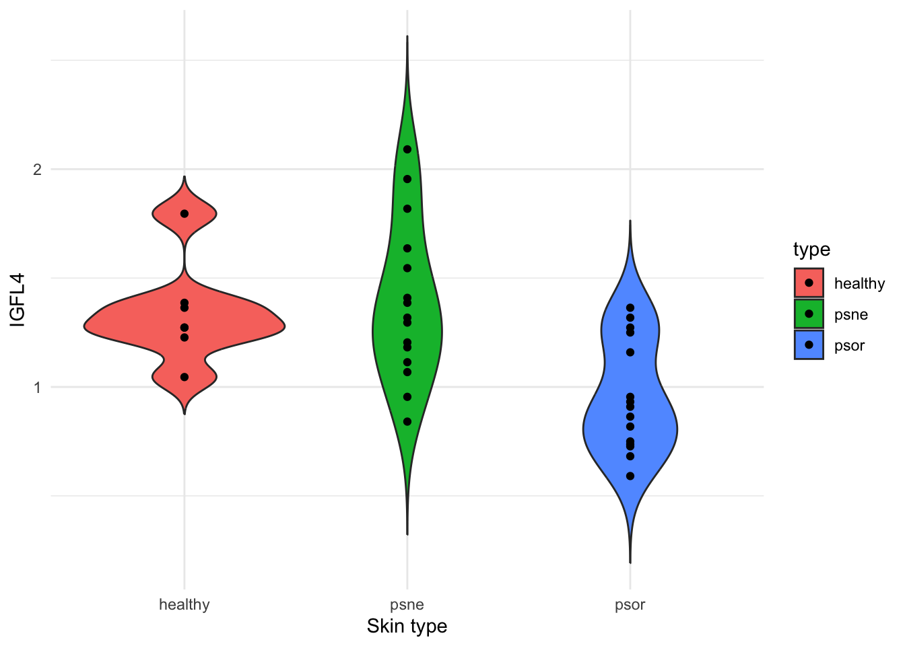
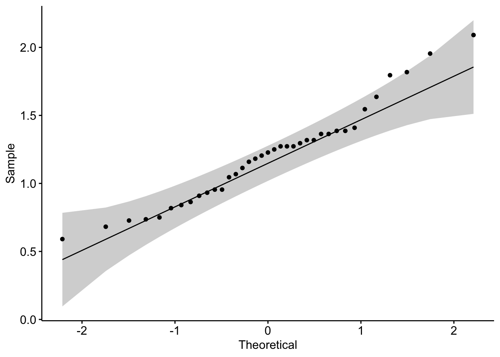
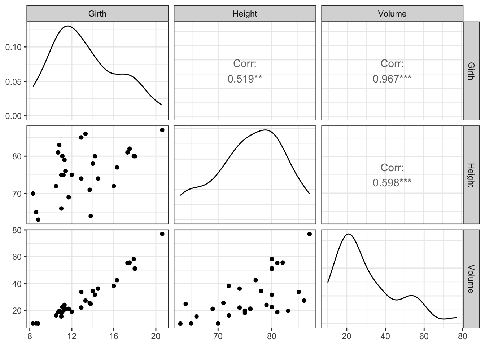
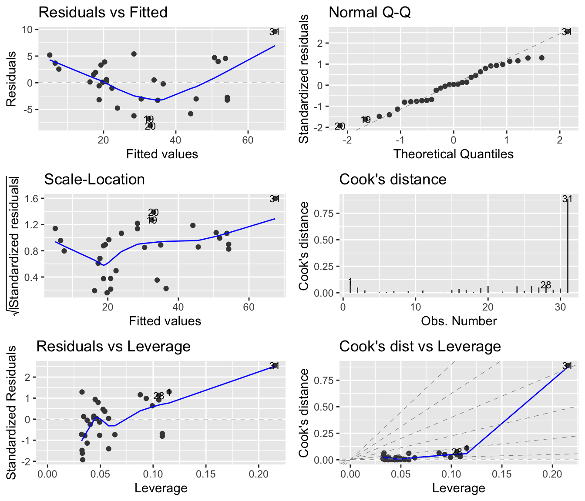
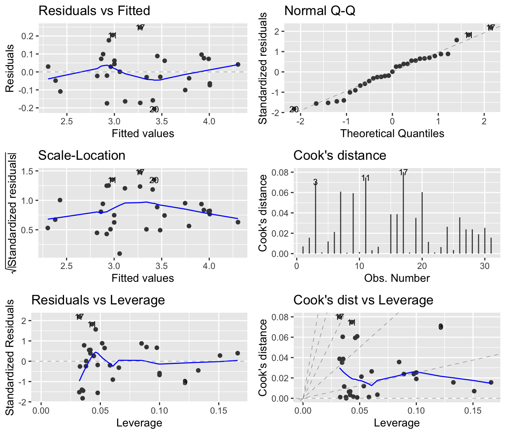
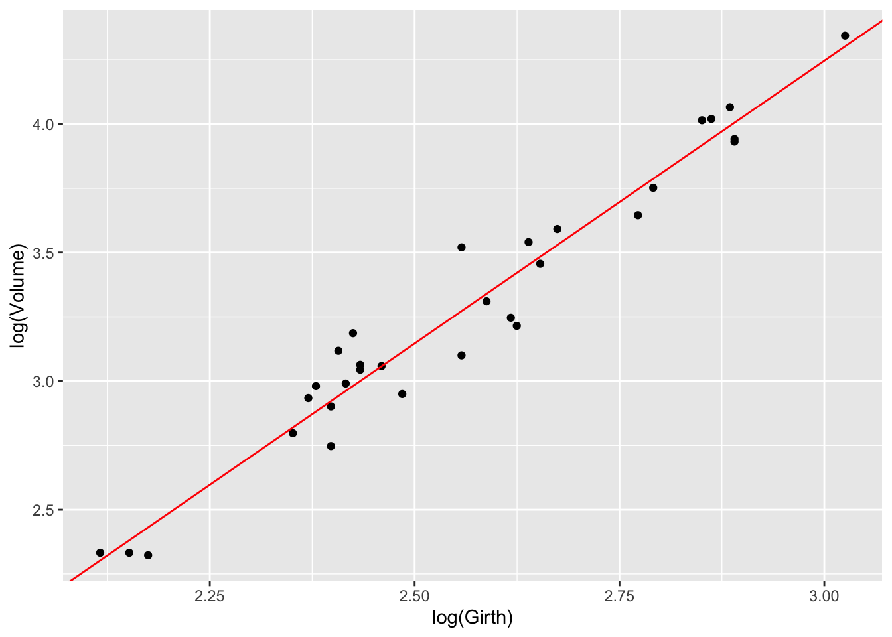

#install.packages("tidyverse")
#install.packages("readxl")
#install.packages("emmeans")
#install.packages("GGally")
#install.packages("ggfortify")
library(tidyverse)
library(readxl)
library(emmeans)
library(GGally)
library(ggfortify)Presentation 4: Applied Statistics in R
We will use the following presentation4.qmd file for this presentation. Please clink on the link, download and open the file in your RStudio.
Structure of a biostatistical analysis in R
The very basic structure of an R doc when doing a classical statistical analysis is as follows:
Load packages that you will be using.
Read the dataset to be analyzed. Possibly also do some data cleaning and manipulation.
Visualize the dataset by plots and descriptive statistics.
Fit a statistical model. Validate the model.
Hypothesis testing. Post hoc testing.
Report model parameters and/or model predictions.
Visualize the results.
Of course there are variants of this set-up, and in practice there will often be some iterations of the steps.
In this quaro doc, we will exemplify the proposed steps in the analysis of a simple dataset. We will do:
One-way ANOVA of the expression of the IGFL4 gene against the skin type in psoriasis patients (an inflammatory skin disease).
Linear regression of cherry trees diameter and height.
Load packages
We will use ggplot2 to make plots, and to be prepared for data manipulations, we load this package alongside the rest of the tidyverse. We will also use helper functions from GGally and ggfortify packages for plotting.
The psoriasis data are provided in an Excel sheet, so we also load readxl. Finally, we will use the package emmeans to make post hoc tests.
Now, we are done preparing for our analyses.
Example 1 : Analysis of variance
Step 1: Data
Psoriasis is an immune-mediated skin disease. You conducted a sequencing experiment with skin samples from 37 individuals to study whether certain genes are associated with the disease. This is a perfect case where R skills are very useful, since you cannot be sure until you perform some formal statistical analysis.
The dataset includes three groups:
psor: 15 samples from affected skin of psoriasis patients
psne: 15 samples from unaffected skin of psoriasis patients
control: 7 samples from healthy individuals
You will focus on the gene IGFL4. This gene is a part of the insulin-like growth factor family involved in energy metabolism, growth, and development.
The dataset are stored in psoriasis.xlsx.
# Read in the data from Excel file and call it psoriasisData
psoriasisData <- read_excel("../../Data/psoriasis.xlsx")
# View the top rows of the dataset
head(psoriasisData)# A tibble: 6 × 12
type IGFL4 GeneA GeneB GeneC GeneD GeneE GeneF GeneG GeneH GeneI GeneJ
<chr> <dbl> <dbl> <dbl> <dbl> <dbl> <dbl> <dbl> <dbl> <dbl> <dbl> <dbl>
1 psne 0.841 2.94 3.16 4.21 -0.476 4.20 0.335 5.20 0.167 2.00 4.62
2 psne 0.955 2.67 3.23 6.09 0.121 3.66 1.28 5.52 0.0580 2.06 4.35
3 psne 1.07 2.53 2.80 4.48 -0.165 3.90 1.18 5.40 -0.202 1.95 2.57
4 psne 1.11 3.56 2.53 4.97 0.139 2.92 0.744 4.98 -0.329 2.03 3.17
5 psne 1.18 3.48 2.79 4.74 -0.102 3.04 0.513 5.48 -0.116 2.04 3.61
6 psne 1.20 2.94 3.12 4.20 -0.200 3.46 0.472 3.95 -0.129 1.55 3.56# Extract the data of interest containing the IGFL4 expression levels and skin sample type from the dataset and call this subset psorData
psorData <- select(psoriasisData, type, IGFL4)The type variable (skin sample type) is initially a character variable, so you will convert it to a factor and verify that the group counts are 15, 15, and 7.
# Change variable named 'type' to factor so that we can use in our analysis in the next steps
# First let's check if it is character
is.character(psorData$type)[1] TRUE# Now change to factor
psorData <- mutate(psorData, type = factor(type))
# Again, let's check if it is factor now
# Check that there are 15, 15 and 7 skin samples in the three groups. Hint: count()
count(psorData, type)# A tibble: 3 × 2
type n
<fct> <int>
1 healthy 7
2 psne 15
3 psor 15Step 2: Descriptive plots and statistics
To get an overview of the data, we will make a violin plots of IGFL4 expression levels from each skin type (healthy, psne, psor), and compute group-wise means and standard deviations.
# A plot showing three groups of skin samples (healthy, psne, psor) and IGFL4 expression levels from each skin sample
ggplot(psorData, aes(x=type, y=IGFL4, fill=type)) +
geom_violin(trim = FALSE) +
geom_point() +
labs(x="Skin type", y="IGFL4") +
theme_minimal()
We will also extract some descriptive statistics.
# And finally, obtain the group-wise (healthy, psne, psor) descriptive statistics (mean, median and standard deviation).
psorData %>%
group_by(type) %>%
summarise(avg=mean(IGFL4), median=median(IGFL4), sd=sd(IGFL4))# A tibble: 3 × 4
type avg median sd
<fct> <dbl> <dbl> <dbl>
1 healthy 1.34 1.27 0.230
2 psne 1.39 1.32 0.363
3 psor 0.955 0.909 0.255Before we decide on which statistical test to use to compare our groups, lets check if our gene expression data is normal distributed. If data are not normal, consider transformations (log, square root) or non-parametric statistical tests (Wilcoxon, Kruskal–Wallis).
Testing for Normality in R is done by either visual inspection or statistical test.
We will use a helper function from ggpubr package to make a quantile-quantile plot. You can also use the base R function qqnorm().
library(ggpubr)
# nice ggplot2-based QQ plot
ggqqplot(psorData$IGFL4) # ggplot2-based QQ plot
In addition to our visual inspection, we will perform a Shapiro–Wilk test to test the null hypothesis that the data are normally distributed.
shapiro.test(psorData$IGFL4)
Shapiro-Wilk normality test
data: psorData$IGFL4
W = 0.96257, p-value = 0.2435The null hypothesis (H₀): data are normally distributed.
p > 0.05: fail to reject H₀ → data look normal.
p ≤ 0.05: reject H₀ → data not normal.
Best practice is to use both approaches: Visual inspection to see how data deviate from normality.
Step 3: Fit of oneway ANOVA
The scientific question is whether the gene expression level of IGFL4 differs between the three types/groups.
We will use a one-way ANOVA to test whether IGFL4 expression differs across the three groups. In R, you can fit a one-way ANOVA with the lm() function. You should save the fitted model object (e.g., oneway) so you can reuse it for further analysis.
# oneway analysis of variance (ANOVA)
oneway <- lm(IGFL4 ~ type, data=psorData)
oneway
Call:
lm(formula = IGFL4 ~ type, data = psorData)
Coefficients:
(Intercept) typepsne typepsor
1.33766 0.05022 -0.38251 You can inspect the model parameters with:
# View the model coefficients
summary(oneway)
Call:
lm(formula = IGFL4 ~ type, data = psorData)
Residuals:
Min 1Q Median 3Q Max
-0.54697 -0.20606 -0.06494 0.20394 0.70303
Coefficients:
Estimate Std. Error t value Pr(>|t|)
(Intercept) 1.33766 0.11352 11.783 1.49e-13 ***
typepsne 0.05022 0.13748 0.365 0.71718
typepsor -0.38251 0.13748 -2.782 0.00874 **
---
Signif. codes: 0 '***' 0.001 '**' 0.01 '*' 0.05 '.' 0.1 ' ' 1
Residual standard error: 0.3003 on 34 degrees of freedom
Multiple R-squared: 0.3373, Adjusted R-squared: 0.2983
F-statistic: 8.653 on 2 and 34 DF, p-value: 0.0009171The output shows the estimated group means (intercept and coefficients) and standard errors. The intercept is the estimated mean IGFL4 expression in the reference group (here, healthy). The coefficients are the differences between the other groups and the reference group.
QUESTION: Is there a a significant difference in the expression level of the IGFL4 gene between psne and psor skin samples? How could we check this?
Although summary() works well, we recommend using the emmeans package for a clearer and more user-friendly presentation of group means and comparisons.
library(emmeans)Step 4: Hypothesis test + Post hoc tests
It is standard to perform an F-test to check whether the mean IGFL4 expression differs across groups. Formally, the null hypothesis is that all group means are equal. The easiest way to run this test in R is with drop1() and the test="F" option:
# F-test for the overall effect of group
drop1(oneway, test = "F")Single term deletions
Model:
IGFL4 ~ type
Df Sum of Sq RSS AIC F value Pr(>F)
<none> 3.0671 -86.137
type 2 1.5611 4.6282 -74.914 8.6525 0.0009171 ***
---
Signif. codes: 0 '***' 0.001 '**' 0.01 '*' 0.05 '.' 0.1 ' ' 1If the F-test is significant, at least one group differs — but we don’t yet know which ones. To identify the specific differences, we perform post hoc pairwise comparisons.
A convenient approach uses the emmeans package:
# Perform post hoc pairwise comparisons
pairs(emmeans(oneway,~type)) contrast estimate SE df t.ratio p.value
healthy - psne -0.0502 0.137 34 -0.365 0.9293
healthy - psor 0.3825 0.137 34 2.782 0.0232
psne - psor 0.4327 0.110 34 3.946 0.0011
P value adjustment: tukey method for comparing a family of 3 estimates Here, emmeans() computes the estimated marginal means (predicted IGFL4 expression), and pairs() performs Tukey-adjusted pairwise comparisons between groups.
Step 5: Report of model parameters
Gene expression levels are significantly different between 2 groups of skin samples
healthy - psor
psne - psor
In this example it is natural to report the estimated intensities as well as the comparisons between the 3 groups.
emmeans(oneway, ~ type) type emmean SE df lower.CL upper.CL
healthy 1.338 0.1140 34 1.107 1.57
psne 1.388 0.0775 34 1.230 1.55
psor 0.955 0.0775 34 0.798 1.11
Confidence level used: 0.95 Example B: Simple linear regression
Step 1: Data
We will use data from 31 cherry trees available in the built in dataset trees: Girth, height and tree volume have been measured for each tree. Please note, that the help page ?trees states, that girth is the tree diameter. Interest is in the association between tree volume on the one side and girth and height on the other side.
The term regression is usually used for models where all explanatory variables are numerical, whereas the term analysis of variance (ANOVA) is usually used for models where all explanatory variables are categorical (i.e. factors). However, predictors of both types can be included in the same Gaussian linear model.
data(trees)
head(trees) Girth Height Volume
1 8.3 70 10.3
2 8.6 65 10.3
3 8.8 63 10.2
4 10.5 72 16.4
5 10.7 81 18.8
6 10.8 83 19.7Step 2: Descriptive plots and statistics
The GGally package helps us make an easy summary plot, where the diagonal is used to visualize the marginal distribution of the three tree variables:
ggpairs(trees) +
theme_bw()
Step 3: Fitting and validating a simple linear regression model
We fit a simple linear regression with volume as outcome (i.e. dependent variable) and girth as covariate (i.e. independent variable). This model is fitted with the lm function. It is a good approach to assign a name (below linreg1) to the object with the fitted model. This object contains all relevant information and may be used for subsequent analysis.
linreg1 <- lm(Volume ~ Girth, data=trees)
linreg1
Call:
lm(formula = Volume ~ Girth, data = trees)
Coefficients:
(Intercept) Girth
-36.943 5.066 Mathematically this model makes assumptions about linearity, variance homogeneity, and normality. These assumptions are checked visually via four plots generated from the model residuals. In R it is easy to make these plots; simply apply plot on the lm-object, or, use a function from ggfortify package to build a ggplot2 diagnostic plot for linear models.
par(mfrow=c(2,2)) # makes room for 4=2x2 plots!
plot(linreg1)library(ggfortify)
autoplot(linreg1, which = 1:6, ncol = 2, label.size = 3)
In this case there appears to be problems with the model. In particular, the upper left plot shows a quadratic tendency suggesting that the linearity assumption is not appropriate. Sample 31, appears to be an outlier. Perhaps a data transformation can help us out.
Step 4 iterated: Transformation
The linear regression model above says that an increment of \(\Delta_g\) of girth corresponds to an increment of volume by \(\beta\Delta_g\) where \(\beta\) is the slope parameter (i.e. the coefficient), and hence, the interpretation is concerned with absolute changes. Perhaps it is more reasonable to talk about relative changes: An increment of girth by a factor \(c_g\) corresponds to an increment of volume of \(\gamma c_g\). This corresponds to a linear regression model on the log-transformed variables, which is easily fitted. Notice that log in R is the natural logarithm.
linreg2 <- lm(log(Volume) ~ log(Girth), data=trees)This model looks better!
autoplot(linreg2, which = 1:6, ncol = 2, label.size = 3)
Step 5: Hypothesis test and model assesment
Parameter estimates, standard errors are computed and certain hypothesis tests are carried out by the summary function:
summary(linreg2)
Call:
lm(formula = log(Volume) ~ log(Girth), data = trees)
Residuals:
Min 1Q Median 3Q Max
-0.205999 -0.068702 0.001011 0.072585 0.247963
Coefficients:
Estimate Std. Error t value Pr(>|t|)
(Intercept) -2.35332 0.23066 -10.20 4.18e-11 ***
log(Girth) 2.19997 0.08983 24.49 < 2e-16 ***
---
Signif. codes: 0 '***' 0.001 '**' 0.01 '*' 0.05 '.' 0.1 ' ' 1
Residual standard error: 0.115 on 29 degrees of freedom
Multiple R-squared: 0.9539, Adjusted R-squared: 0.9523
F-statistic: 599.7 on 1 and 29 DF, p-value: < 2.2e-16#drop1(linreg2, test = "F")The coefficient table is the most important part of the output. It has two lines — one for each parameter in the model — and four columns. The first line is about the intercept, the second line is about the slope. The columns are
Estimate: The estimated value of the parameter (intercept or slope).Std. Error: The standard error (estimated standard deviation) associated with the estimate in the first column.t value: The \(t\)-test statistic for the hypothesis that the corresponding parameter is zero. Computed as the estimate divided by the standard error.Pr(>|t|): The \(p\)-value associated with the hypothesis just mentioned. In particular the \(p\)-value in the second line is for the null hypothesis that there is no effect of girth on volume.
If you would like to report confidence intervals for the parameters (intercept and slope), then use confint:
confint(linreg2) 2.5 % 97.5 %
(Intercept) -2.825083 -1.881566
log(Girth) 2.016238 2.383702Step 6: Visualization of the model
An excellent synthesis of a statistical analysis is often provided by a plot combining the raw data with the model fit.
ggplot(trees, aes(x = log(Girth), y = log(Volume))) +
geom_point() +
geom_abline(intercept=-2.35332, slope=2.19997, col="red")
Outlook: Other analyses
The lm function is used for linear models, that is, models where data points are assumed to be independent with a Gaussian (i.e. normal) distribution (and typically also with the same variance). Obviously, these models are not always appropriate, and there exists functions for many, many more situations and data types. Here, we just mention a few functions corresponding to common data types and statistical problems.
glm: For independent, but non-Gaussian data. Examples are binary outcomes (logistic regression) and outcomes that are counts (Poisson regression). glm is short for generalized linear models, and theglmfunction is part of the base installation of R.lmerandglmer: For data with dependence structures that can be described by random effects, e.g., block designs. lme is short for linear mixed effects (Gaussian data), glmer is short for generalized linear mixed effects (binary or count data). Both functions are part of the lme4 package.nls: For non-linear regression, e.g., dose-response analysis. nls is short for non-linear least squares. The function is included in the base installation of R.
The functions mentioned above are used in a similar way as lm: a model is fitted with the function in question, and the model object subsequently examined with respect to model validation, estimation, computation of confidence limits, hypothesis tests, prediction, etc. with functions summary, confint, drop1, emmeans, pairs as mostly indicated above.